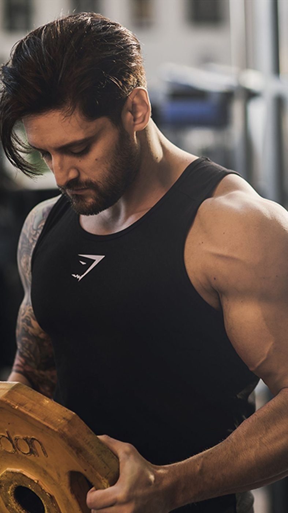

Between Sets If time
Warm lifestyle portrait · Gym · lights on · clothed warm-up look
Soft, directional light from one side and a warm, defocused gym behind him. Eye contact (bench) or eyes down on the plate. This is the friendly, clothed frame a gym or brand can actually use in ads, so it earns its place even in a dark set.
WearWhite crew tee + navy/black shorts, or black tank
Camera · A7 III + 24–105 f/4
- Mode
- Manual · RAW
- Focal
- 105mm at f/4 from 3–4m, or FE 50 at f/2 for the shallow plate shot
- Aperture
- f/4 (24–105) · f/2 (FE 50)
- Shutter
- 1/160s
- ISO
- 400
- WB
- 5000K
- AF
- AF-C · Eye AF
Light plan (top view)
Lights
- AD200 ProSoftbox without grid, camera-left 45°, slightly above eye level, about 1.5m. 1/32. Big and close means soft.
- Hiffin 60W3200K at 50%, behind him camera-right, aimed at the back of his shoulder and hair. It fakes the warm window glow.
- iT32Off.
Direct himSit on the bench edge, forearms on knees, hands loosely clasped. Look into the lens, then off to camera-left. Second set: load a plate with eyes on the plate.
Watch forKeep 5m or more between him and the background so the gym melts. A white tee clips first, so expose for the tee. Turn the gym lights on so the background has bokeh.
EditWarm, slightly lifted shadows, gentle teal in the background, skin warm but not orange.